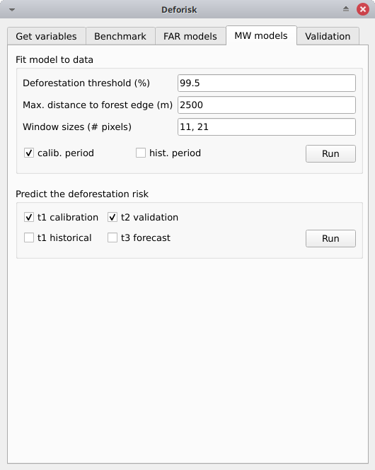

Plugin API#
Plugin interface#

The plugin interface shows five tabs: Get variables, Benchmark, FAR models, MW models, and Validation. Each tab includes one or several boxes. For example, the Far models tab includes three boxes: Sample observations, Fit models to data, and Predict the deforestation risk. The arguments of each tab or box are detailed below. They usually correspond to function parameters from the Python packages used by the deforisk plugin.
Get variables#
Download and compute variables#

This box is for collecting the information needed to download the data and compute the variables that will be used to spatially model the deforestation risk for a given area of interest.
Working directory: Path to the working directory where all the data and model outputs will be stored.Area Of Interest: Country ISO 3166-1 alpha-3 code (e.g. MTQ) or path to GPKG vector file in lat/lon delimiting the area of interest (jurisdiction) and the sub-jurisdictions. The GPKG vector file must include two layers, the first one must be named “aoi” for the jurisdiction and the second one must be named “subj” for subjurisdictions. This GPKG vector file can be manually obtained using QGIS tools and data from the Global Administrative Areas (GADM) website. An example is given in the following article on using subnational jurisdictions.Years: Years delimiting the two periods (calibration and validation periods) for forest cover change observations. Three years must be provided. Years can be in the interval 2001–2024 for GFC (GFC does not provide tree cover loss for the year 2000) and 2000–2023 for TMF.Forest data source: Source of the forest data. Could be either “tmf” or “gfc”.Tree cover threshold (%): Tree cover percentage used to define the forest when using GFC.Tile size (dd): Tile size (in decimal degrees) used to download forest cover change. A value of 1 degree is recommended.Country/state ISO code: Country or state ISO code used to download GADM, OSM, SRTM, and WDPA data. The iso code should correspond to the country to which the aoi provided inArea Of Interestbelongs. For Brazilian states, use the code of the state in the form “BRA-XX” (e.g. “BRA-AM” for the Amazonas state). A list of codes that can be used with thedeforiskplugin can be found in this .tsv file (see column iso3).Earth Engine access: Name of a Google Cloud project registered to use Earth Engine (and for which you are identified as a user) or a path to a JSON private key file authorizing you to access Earth Engine through a service account.WDPA access: Personal API Token (a series of letters and numbers such asca4703ffba6b9a26b2db73f78e56e088) or a path to a text file specifying the value of the “WDPA_KEY” environmental variable (e.g. a simple text file including on one lineWDPA_KEY="3e404871700e77c453c4e189d848f739"for example).Projection EPSG code: EPSG code of the coordinate reference system used for projecting maps.
Warning
For Windows users, choose a working directory with a short path (e.g. C:\Users\<username>\<dirname>). Long file paths can cause problems to access files on Windows.
Pushing the Run button in this box will download the data and compute the variables in the background. When the operation is finished, a forest cover change map appears in the list of QGIS layers and a plot of the forest cover change fcc123.png is created in folder outputs/variables. New folders are created in the working directory:
Six data folders are created:
data_raw: raw data with intermediary files.data: processed data used for models and plots.
The following four folders only include symlinks to avoid duplicating data:
data_calibration: data used for model calibration on the calibration period (t1–t2).data_validation: data used to predict the deforestation risk at t2 and validate models on the validation period (t2–t3). This folder used for prediction does not include afcc.tiffile but only raster files of explanatory variables.data_historical: data used for model calibration on the historical period (t1–t3).data_forecast: data used to predict the deforestation risk at t3 and forecast deforestation beyond t3. This folder does not include anyfcc.tiffile either.
Three other folders are created:
outputs: Outputs (figures and tables).outputs/variables: Output for variables.qgis_layer_style: Layer styles for QGIS.
Benchmark#
Fit model to data#
This tab is for collecting the information needed to map the deforestation risk using the benchmark model from the Verra JNR Unplanned Deforestation Allocation (UDef-A) tool. In summary, the benchmark model assumes that deforestation is negligible beyond a given distance to forest edge, that the deforestation risk decreases with the distance to forest edge and that for a given distance to forest edge the risk varies between subjurisdictions.
Deforestation threshold (%): Accumulated deforestation threshold used to identify the distance to forest edge threshold. Default to 99.5% as suggested in the UDef-A methodology.Max. distance to forest edge (m): Maximal distance to forest edge used to compute the accumulated deforestation as a function of the distance to forest edge. Default to 2500 m as most of the deforestation should occur below this distance. Increase this number if the 99.5% threshold for the accumulated deforestation is not reached.calib. period: If checked, the model is fitted over the calibration period (t1–t2).hist. period: If checked, the model is fitted over the historical period (t1–t3).
Pushing the Run button in this box will estimate the distance to forest edge beyond which the deforestation risk is assumed negligible. This distance threshold is used to define a first class of deforestation risk. Then, 29 classes of deforestation risk are estimated from the distance to forest edge using a geometric series to identified bins. Classes with higher deforestation risks have narrower ranges of distance to forest edge. Finally, a deforestation rate is estimated for each of the 30 classes within each subjurisdiction based on the observed deforestation for the time period considered.
The following folders are created: outputs/rmj_benchmark/calibration and outputs/rmj_benchmark/historical. The following files are added to these folders:
tab_dist.csv: Table with the cumulated deforestation as a function of the distance to forest edge.perc_dist.png: Plot of the cumulated deforestation as a function of the distance to forest edge showing the distance threshold.dist_edge_threshold.csv: Table with distance threshold and corresponding cumulated deforestation (which must be \(\geq\) 99.5%).dist_bins.csv: Table with the bins used to convert distance to forest edge into 29 classes of deforestation risk using a geometric series.subj.tif: Raster of subjurisdictions with values going from 1 to potentially 999.prob_bm_t1.tif: Raster with classes of deforestation risk going from 1001 to potentially 30999.prob_bm_t1.png: Plot of the deforestation risk map.defrate_cat_bm_<period>.csv: Table with deforestation rates on the period for each class of deforestation risk (see details below).
Table defrate_cat_<model>_<period>.csv#
Table defrate_cat_<model>_<period>.csv includes the following columns:
cat: The class (or category) of deforestation risk (denoted \(i_{}\)).nfor: The number of forest pixels at the beginning of the period (denoted \(n_{i}\)).ndefor: The number of deforested pixels during the period considered (denoted \(d_{i}\)).time_interval: Time interval for the period (denoted \(T\), in years). E.g. 10 yr for the period 2000–2010.pixel_area: Pixel area (denoted \(A\), in ha). E.g. 0.9 ha for 30 × 30 m pixels.rate_obs: Observed annual deforestation rate per class computed as \(\theta_{o,i} = 1 - (1 - d_{i} / n_{i})^{(1 / T)}\).rate_mod: Relative spatial deforestation probability from model. For the benchmark model, it is computed as \(\theta_{m,i}=d_{i}/n_{i}\).rate_abs: Absolute deforestation probability with quantity adjustment (so that total predicted deforestation equals the observed deforestation on the period), computed from an adjustment factor \(\rho\) as \(\theta_{a,i} = \rho \theta_{m,i}\) with \(\rho = \sum_{i} d_{i} / \sum_i n_{i} \theta_{m,i}\). For the benchmark model for the calibration and historical periods, \(\rho=1\) and \(\theta_{a,i}=\theta_{m,i}\).defor_dens: Deforestation density (in ha/pixel/yr) computed as \(\delta_{i} = \theta_{a,i} \times A / T\). The deforestation density is used to predict the amount of deforestation for each pixel belonging to a given class of deforestation risk.
Predict the deforestation risk#
This step is for predicting the deforestation risk and deriving risk maps using the benchmark models fitted on the calibration or historical period.
t2 validation: If checked, computes predictions at t2 for validation (using the benchmark model fitted over the calibration period).t3 forecast: If checked, computes predictions at t3 for forecasting (using the benchmark model fitted over the historical period).
Pushing the Run button in this box will use the benchmark models for predictions. Note that you cannot make predictions if you have not fitted the models (see previous step). When the operation is finished, rasters representing the classes of deforestation risk appear in the list of QGIS layers. You can navigate the different maps to see how the risk of deforestation is changing in space for the different dates. For example, you can have a look at the effect of the distance to forest edge.
The following folders are created: outputs/rmj_benchmark/validation and outputs/rmj_benchmark/forecast.The following files are added to these folders:
prob_bm_<date>.tif: Raster with classes of deforestation risk going from 1001 to potentially 30999 (high deforestation risk).prob_bm_<date>.png: Plot of the deforestation risk map.defrate_cat_bm_<period>.csv: Table with deforestation rates on the period for each class of deforestation risk. See details above with one exception: columnrate_modindicates deforestation rates obtained during either the calibration (when predicting at t2) or historical (when predicting at t3) period.
FAR models#

Sample observations#
This box is for collecting the information needed to sample the deforestation observations. This is a necessary step as we cannot fit a model using all forest pixels which are usually too many. Nonetheless, sampled observations must be representative of the deforestation process in the study area.
N# samples: Number of observations to be sampled. It is a stratified sampling (N# samples in each class, deforested/non-deforested).Adapt sampling: If checked, the number of observations is proportional to forest area.Random seed: Random seed used to make the random sample reproducible.Spatial cell size (km): Size of the spatial cells used to estimate spatial random effects. These spatial random effects account for the residual regional variability in the deforestation risk which is not taken into account by the spatial explanatory variables (e.g. distance to forest edge) included in the model. Because one parameter is estimated for each cell, use a value so that you have (roughly) between 500 and 1000 spatial cells covering your area of interest.calib. period: If checked, the observations are sampled for the calibration period (t1–t2).hist. period: If checked, the observations are sampled for the historical period (t1–t3).
Pushing the Run button in this box will sample the observations. Note that you cannot sample the observations before downloading and computing the variables (see previous step). When the operation is finished, the sampled observations appear in the list of QGIS layers. You can navigate the map to confirm that about half the observations have been sampled in the deforested area and half in the non-deforested area.
The folder outputs/far_models is created with calibration and historical subfolders if calib. period and hist. period have been checked respectively. Files sample.txt, sample_size.csv, csize_icar.txt, and correlation.pdf are added to the output folders for each period.
Fit models to data#
This tab is for collecting the information needed to spatially model deforestation using three statistical models available in the forestatrisk (FAR) Python package: iCAR, GLM, and Random Forest models.
List of variables: List of explanatory variables used for statistical modelling. Variable names must correspond to file names (without “.tif” extension) in folderdata_calibrationordata_historical. Variable names must be separated by a comma. For categorical variables (such as protected areas) use the variable name with notationC(), such asC(pa). It empty, it will use the default formula:C(pa) + altitude + slope + dist_edge + dist_road + dist_river + dist_town.Starting values for betas: If -99 (recommended), starting values for betas correspond to estimates of a simple GLM with the same variables.Prior Vrho: If -1 (recommended), the prior for Vrho is an Inverse-Gamma.MCMC: Length of the MCMC for the final model.Variable selection: If checked (recommended), a variable selection (backward selection) is performed before fitting the final model.calib. period: If checked, models are fitted over the calibration period (t1–t2).hist. period: If checked, models are fitted over the historical period (t1–t3).
Pushing the Run button in this box will fit the statistical model to the deforestation observations. Note that you cannot fit the model if you have not sampled the observations (see previous step).
The following files are added to the outputs/far_models/calibration and outputs/far_models/historical folders:
summary_icar.txt: Summary of the iCAR model with mean, standard-deviation, and credible intervals for model parameters.mcmc.pdf: Trace and posterior distribution for the icar model parameters. Used to check MCMC convergence.mod_icar.pickle: A compressed file with iCAR model characteristics. Used for projections.mod_null.pickle: A compressed file with null model characteristics. Only used as an archive.mod_glm.pickle: A compressed file with GLM model characteristics. Used for projections.mod_rf.joblib: A compressed file with Random Forest model characteristics. Used for projections.model_deviances.csv. A text file comparing the percent deviance explained between models. This percentage is an indication of the goodness-of-fit of the model.
Predict the deforestation risk#
This step is for predicting the deforestation risk and deriving risk maps using the FAR models fitted on the calibration or historical period.
iCAR model: If checked, computes predictions with the iCAR model.GLM: If checked, computes predictions with GLM.RF model: If checked, computes predictions with the Random Forest model.t1 calibration: If checked, computes predictions at t1 using models fitted over the calibration period.t2 validation: If checked, computes predictions at t2 for validation (using models fitted over the calibration period).t1 historical: If checked, computes predictions at t1 using models fitted over the historical period.t3 forecast: If checked, computes predictions at t3 for forecasting (using models fitted over the historical period).
Pushing the Run button in this box will use the statistical models for predictions. Note that you cannot make predictions if you have not fitted the models (see previous step). When the operation is finished, rasters representing the classes of deforestation risk appear in the list of QGIS layers. You can navigate the different maps to see how the risk of deforestation is changing in space for the different dates. For example, you can have a look at the effect of the distance to forest edge, of the distance to roads, or of protected areas.
The following folders are created for each period: outputs/far_models/<period>. The following files are created for each model, date or period:
prob_<far_model>_<date>.tif: Raster with classes of deforestation risk going from 1 to 65535 (highest deforestation risk).prob_<far_model>_<date>.png: Plot of the deforestation risk map.defrate_cat_<model>_<period>.csv: Table with deforestation rates on the period for each class of deforestation risk. See details above with one exception for FAR models: columnrate_modis computed as \(\theta_{m,i} = ((i - 1) \times 999999 / 65534 + 1) \times 1e^{-6}\). This formula leads to an almost null (\(1e^{-6}\)) deforestation probability when \(i=1\) and to a deforestation probability of 1 when \(i=65535\).
MW models#
Fit model to data#
This tab is for collecting the information needed to map the deforestation risk using the moving window model which was first proposed by Verra in the JNR Risk Mapping Tool v0.1. In summary, the moving model assumes that deforestation is negligible beyond a given distance to forest edge (as for the benchmark model), and that the deforestation risk can be estimated in the remaining area with a moving window approach.
Deforestation threshold (%): Accumulated deforestation threshold used to identify the distance to forest edge threshold. Default to 99.5%.Max. distance to forest edge (m): Maximal distance to forest edge used to compute the accumulated deforestation as a function of the distance to forest edge. Default to 2500 m as most of the deforestation should occur below this distance. Increase this number if the threshold for the accumulated deforestation is not reached.Window sizes (# pixels): Window sizes in number of pixels. Several window sizes can be specified if separated with a comma, such as “11, 21” for example which are the default values.calib. period: If checked, the model is fitted over the calibration period (t1–t2).hist. period: If checked, the model is fitted over the historical period (t1–t3).
Pushing the Run button in this box will estimate the distance to forest edge beyond which the deforestation risk is assumed negligible. This distance threshold is used to define a first class of deforestation risk equal to 1. Then deforestation rates are estimated in the remaining area with a moving window. Deforestation rates on the interval [0, 1] are rescaled on the interval [2, 65535].
The following folders are created: outputs/rmj_moving_window/calibration and outputs/rmj_moving_window/historical. The following files are added to these folders:
tab_dist.csv: Table with the cumulated deforestation as a function of the distance to forest edge.perc_dist.png: Plot of the cumulated deforestation as a function of the distance to forest edge showing the distance threshold.dist_edge_threshold.csv: Table with distance threshold and corresponding cumulated deforestation (which must be greater or equal to the defined deforestation threshold).ldefrate_mw_<window_size>.tif: Raster with local deforestation rates rescaled on [2, 65535].
Predict the deforestation risk#
This step is for predicting the deforestation risk and deriving risk maps using the moving window models fitted on the calibration or historical period.
t1 calibration: If checked, computes predictions at t1 using models fitted over the calibration period.t2 validation: If checked, computes predictions at t2 for validation (using models fitted over the calibration period).t1 historical: If checked, computes predictions at t1 using models fitted over the historical period.t3 forecast: If checked, computes predictions at t3 for forecasting (using models fitted over the historical period).
Pushing the Run button in this box will use the moving window models for predictions. Note that you cannot make predictions if you have not fitted the models (see previous step). When the operation is finished, rasters representing the classes of deforestation risk appear in the list of QGIS layers. You can navigate the different maps to see how the risk of deforestation is changing in space for the different dates.
The following folders are created for each period: outputs/rmj_benchmark/<period>. The following files are created for each window size, date or period:
prob_mw_<window_size>_<date>.tif: Raster with classes of deforestation risk going from 1 (null deforestation risk beyond the distance threshold) to 65535 (highest deforestation risk).prob_mw_<window_size>_<date>.png: Plot of the deforestation risk map.defrate_cat_mw_<window_size>_<period>.csv: Table with deforestation rates on the period for each class of deforestation risk. See details above with one exception for moving window models: columnrate_modis computed as \(\theta_{m,1} = 0\) and \(\theta_{m,i} = ((i - 2) \times 999999 / 65533 + 1) \times 1e^{-6}\) for \(i > 1\). This formula leads to an almost null (\(1e^{-6}\)) deforestation probability when \(i=2\) and to a deforestation probability of 1 when \(i=65535\).
Validation#

Model validation#
This step is used to validate deforestation models and maps and estimate their performance at correctly predicting the location of the deforestation. By default, the performance of the benchmark model is always estimated.
Coarse grid cell size (# pixels): Spatial cell size in number of pixels used to compare observed deforested area with predicted deforested area. Cell size must be < 10 km. As an example, a value of 300 corresponds to 9 km for a 30 m resolution raster. Several values can be provided if separated with comma. Default to “50, 100”.iCAR model: If checked, estimates the performance of the iCAR model.GLM: If checked, estimates the performance of the GLM.RF model: If checked, estimates the performance of the Random Forest model.MW model: If checked, estimates the performance of the Moving Window models.calib. period: If checked, estimates model performances for the calibration period (t1–t2).valid. period: If checked, estimates model performances for the validation period (t2–t3).hist. period: If checked, estimates model performances for the historical period (t1–t3).
Pushing the Run button in this box will compute the predicted deforested area in each grid cell for each model and each period which have been selected and will compare this value to the observed deforested area for the same grid cell and period. Note that you cannot validate models if you have not fitted these models (see previous step).
The following folders are created for each period: outputs/model_validation/<period>/figures and outputs/model_validation/<period>/tables. The following files are added for each model, period, and grid cell size:
tables/pred_obs_<model>_<period>_<cell_size>.csv: Values of observed and predicted deforested area in each grid cell.tables/indices_<model>_<period>_<cell_size>.csv: Values of performance indices for a given model, period, and grid cell size. Performance indices include the \(R^{2}\), the median absolute error (MedAE, in ha), the root mean square error (RMSE, in ha), and the weighted root mean square error (wRMSE, in ha), fo which the weights are determined by the number of forest pixels in each coarse grid cell.figures/pred_obs_<model>_<period>_<cell_size>.png: Plot of predicted vs. observed deforested area. The plot shows values of predicted and observed deforested area in each grid cell as points and the one-one line. The plot reports also the number of grid cells (or points), and the values of two of the performance indices: the \(R^{2}\) and the MedAE.
Allocating deforestation#
This step is to allocate deforestation to a project within the jurisdiction.
Juris. risk map: Path to the jurisdictional risk map at t3. Usually from the best deforestation model.Table. with defor. rates: Path to the table with the deforestation rates from the model at t3 for each class of deforestation risk.Project borders: Path to the vector file defining the project borders.Juris. deforestation (ha): Expected deforestation at the jurisdictional level in hectares.Length forecast period (yr): Length of the time-period for the forecast (also named “baseline validity period”), in years. Used to compute annual deforestation for the project.
Pushing the Run button in this box computes the quantity adjustment factor and the deforestation density for each class of risk using the total expected deforestation at the jurisdictional level and the relative spatial deforestation rates from the model. Then,
the risk map with classes of deforestation risk is cropped to project borders and the number of forest pixels in each class of risk is computed at the project level. Finally, the expected deforestation at the project level is obtained summing the deforestation densities within the project.
The following folder is created: outputs/allocating_deforestation. This folder includes the following files:
project_riskmap.tif: Risk map cropped to project borders.project_riskmap.tif.aux.xml: Histogram data with pixel counts for each class of risk in [1, 65535].defrate_cat_forecast.csv: Table with deforestation density (in ha/pixel/yr) for each class of deforestation risk.defor_project.csv: Table with the annual and total allocated deforestation for the project.